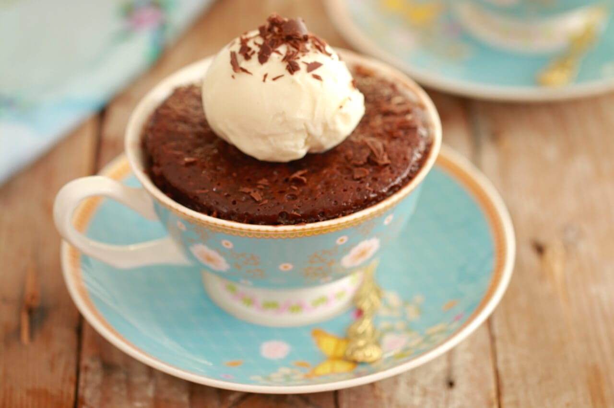

The easiest cake you dont even need to bake

This is the easiest cake you will ever bake in your entite life. This is because it takes a mind-boggling 3 ingredients and 1 microwave
Ingredients
- 1/4 cup + 1 tablespoon (3 ¼ oz/90g) Nutella
- 1 large egg* , gently whisked
- 2 tablespoons all purpose flour
Steps
- In a large microwavable mug add the Nutella and egg* and whisk together.
- Add flour and mix until you have a smooth batter.
- Microwave for roughly 45 seconds - 1 minute. (Cooking time is based on my 1200W so your timing might vary). Always keep a close eye on your mug while in the microwave so it doesn’t overflow or overcook.
- When the brownie is set and firm on top it is done. Let the brownie cool and minutes before serving
- Serve with some vanilla ice cream while it’s still warm.
*Replacing Eggs: You can replace the eggs in this recipe by following BiggerBolderBaking's Egg Substitues Chart.